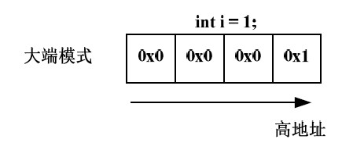
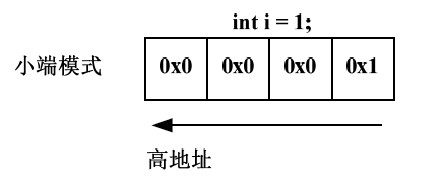

union定义
“联合”是一种特殊的类，也是一种构造类型的数据结构。在一个“联合”内可以定义多种不同的数据类型， 一个被说明为该“联合”类型的变量中，允许装入该“联合”所定义的任何一种数据，这些数据共享同一段内存，已达到节省空间的目的（还有一个节省空间的类型：位域）。 这是一个非常特殊的地方，也是联合的特征。另外，同struct一样，联合默认访问权限也是公有的，并且，也具有成员函数。
“联合”与“结构”有一些相似之处。但两者有本质上的不同。在结构中各成员有各自的内存空间， 一个结构变量的总长度是各成员长度之和（空结构除外，同时不考虑边界调整）。而在“联合”中，各成员共享一段内存空间， 一个联合变量的长度等于各成员中最长的长度，同一时间只能储存其中一个数据成员，所有的数据成员具有相同的起始地址。应该说明的是， 这里所谓的共享不是指把多个成员同时装入一个联合变量内， 而是指该联合变量可被赋予任一成员值，但每次只能赋一种值， 赋入新值则冲去旧值。
栗子如下：
union Foo
{
char character;
char *str;
double number;
};
一个union只配置一个足够大的空间以来容纳最大长度的数据成员，以上例而言，最大长度是double类型，所以Foo的空间大小就是double数据类型的大小。
在C++里，union的成员默认属性页为public。union主要用来压缩空间。如果一些数据不可能在同一时间同时被用到，则可以使用union。
大小端模式对union 类型数据的影响
下面再看一个例子：
union var{
char c[4];
int i;
};
int main(){
union var data;
data.c[0] = 0x04;//因为是char类型，数字不要太大，算算ascii的范围~
data.c[1] = 0x03;//写成16进制为了方便直接打印内存中的值对比
data.c[2] = 0x02;
data.c[3] = 0x11;//数组中下标低的，地址也低，按地址从低到高，内存内容依次为：04,03,02,11。总共四字节！
//而把四个字节作为一个整体（不分类型，直接打印十六进制），应该从内存高地址到低地址看，0x11020304，低位04放在低地址上。
printf("%x\n",data.i);
}
data.i的值应该为多少呢？
这里需要考虑存储模式：大端模式和小端模式。
大端模式（Big_endian）：字数据的高字节存储在低地址中，而字数据的低字节则存放在高地址中。
小端模式（Little_endian）：字数据的高字节存储在高地址中，而字数据的低字节则存放在低地址中。
union 型数据所占的空间等于其最大的成员所占的空间。对union 型的成员的存取都是相对于该联合体基地址的偏移量为0 处开始，也就是联合体的访问不论对哪个变量的存取都是从union 的首地址位置开始。如此一解释，上面的问题是否已经有了答案呢？
我的Mac系统打印的是 11020304 ,说明是小端模式。。
如何用程序确认当前系统的存储模式？
上述问题似乎还比较简单，那来个有技术含量的：请写一个C 函数，若处理器是Big_endian 的，则返回0；若是Little_endian 的，则返回1。
先分析一下，按照上面关于大小端模式的定义，假设int 类型变量i 被初始化为1。
以大端模式存储，其内存布局如下图：

以小端模式存储，其内存布局如下图：

变量i占4 个字节，但只有一个字节的值为1，另外三个字节的值都为0。如果取出低地址上的值为0，毫无疑问，这是大端模式；如果取出低地址上的值为1，毫无疑问，这是小端模式。既然如此，我们完全可以利用union类型数据的特点：所有成员的起始地址一致。
到现在，应该知道怎么写了吧？参考答案如下：
int checkSystem( )
{
union check
{
int i;
char ch;
} c;
c.i = 1;
return (c.ch == 1);
}
总结
union同一时间只能储存其中一个数据成员，所有的数据成员具有相同的起始地址，它所占的空间等于其最大的成员所占的空间，机器的大小端存储影响union成员的取值。